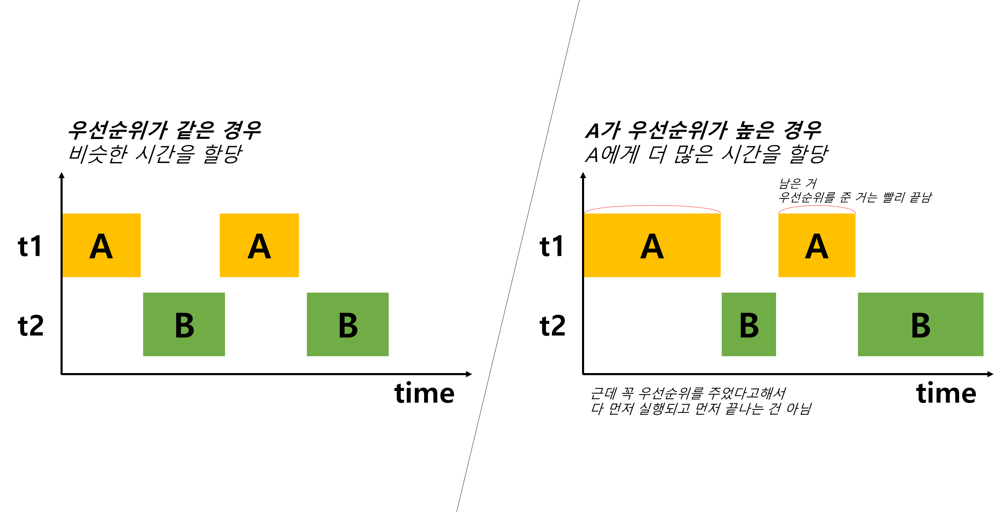
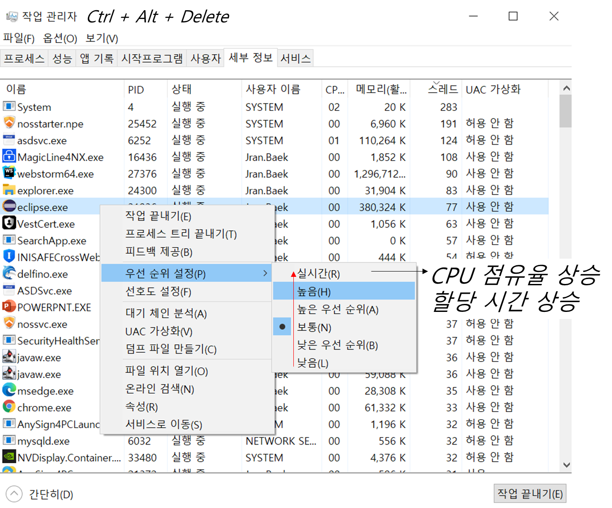
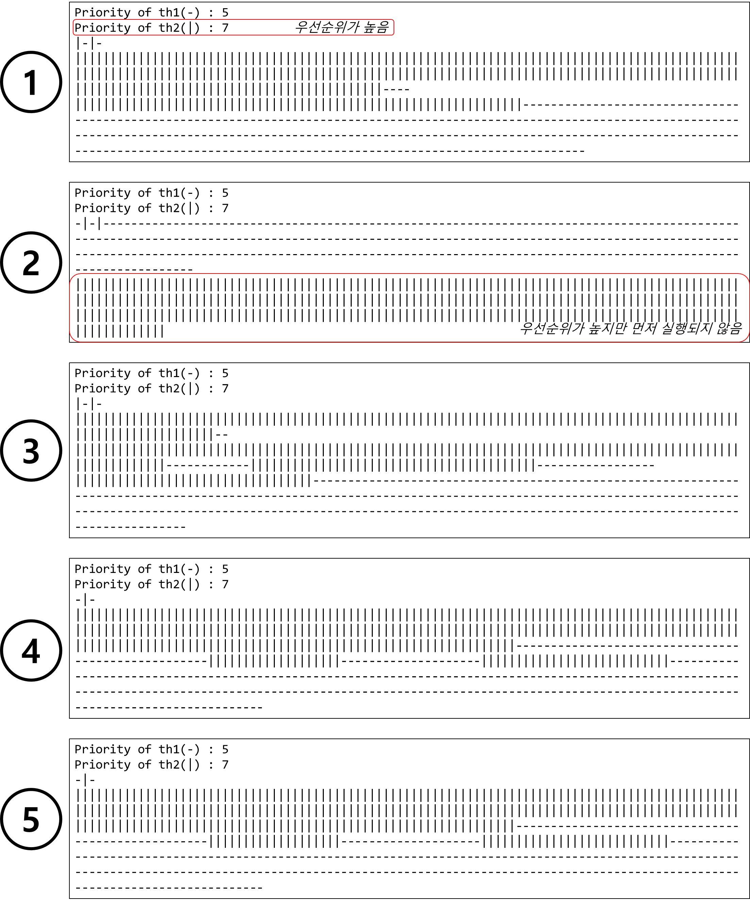

Ch13-14~17. thread group
0. 목차
Chapter13. 쓰레드
Ch13 - 14. 쓰레드의 우선순위
Ch13 - 15. 쓰레드의 우선순위 예제
Ch13 - 16. 쓰레드 그룹(thread group)
Ch13 - 17. 쓰레드 그룹(thread group)의 메서드
Ch13 - 14. 쓰레드의 우선순위
▶ 쓰레드의 우선순위(priority of thread)란?
▷ 작업의 중요도에 따라 쓰레드의 우선순위를 다르게 하여
▷ 특정 쓰레드가 더 많은 작업 시간은 갖게 할 수 있음
▶ 쓰레드의 우선순위(priority of thread) 지정
▷ 쓰레드의 우선순위를 지정한 값으로 변경
void setPriority(int newPriority)
// 예를 들어
void setPriority(int 7) 이렇게 하면, 우선순위 : 7위

▷ 우선순위의 범위 : 1 ~ 10
▷ 우선순위를 지정하지 않으면, 보통 우선순위 ‘5’로 지정
public static final int MAX_PRIORITY = 10 // 최대 우선순위
public static final int MIX_PRIORITY = 10 // 최소 우선순위
public static final int NORM_PRIORITY = 5 // 보통 우선순위
▶ 쓰레드의 우선순위(priority of thread) 반환
▷ 쓰레드의 우선순위를 알고 싶을 때
int getPriority()
▶ OS 스케쥴러가 보는 우선순위
▷ OS 스케쥴러에게 우선순위를 보여주는 건 희망사항
▷ 윈도우 OS의 경우 32단계의 우선순위가 존재
▷ 모든 프로그램을 관할하는 OS가 볼 때 우리가 지정한 우선순위는 참고 정도
▷ OS에서 이클립스 우선순위를 높이는 방법

Ch13 - 15. 쓰레드의 우선순위 예제
▶ 우선순위 지정
▷ 우선순위가 높다 = 확률적으로 선행 될 가능성이 높다
▷ 우선순위가 높다 ≠ 반드시 선행 된다
class Ex13_6 {
public static void main(String args[]) {
ThreadEx6_1 th1 = new ThreadEx6_1();
ThreadEx6_2 th2 = new ThreadEx6_2();
th2.setPriority(7);
System.out.println("Priority of th1(-) : " + th1.getPriority());
System.out.println("Priority of th2(|) : " + th2.getPriority());
th1.start();
th2.start();
}
}
class ThreadEx6_1 extends Thread {
public void run() {
for(int i=0; i < 300; i++) {
System.out.print("-");
for(int x=0; x < 10000000; x++);
}
}
}
class ThreadEx6_2 extends Thread {
public void run() {
for(int i=0; i < 300; i++) {
System.out.print("|");
for(int x=0; x < 10000000; x++);
}
}
}
▷ console

Ch13 - 16. 쓰레드 그룹(thread group)
▶ 쓰레드 그룹(thread group)이란?
▷ 서로 관련된 쓰레드를 그룹으로 묶어서 다룸
▷ 모든 쓰레드는 반드시 하나의 쓰레드 그룹에 포함되어 있어야 함
Thread(ThreadGroup group, String name)
Thread(ThreadGroup group, Runnable target)
Thread(ThreadGroup group, Runnable target, String name)
Thread(ThreadGroup group, Runnable target, String name, long stackSize)
▷ 쓰레드 그룹을 지정하지 않고 쓰레드 생성 시, main 쓰레드 그룹에 속함
▷ 자신을 생성한 쓰레드(부모 쓰레드)의 그룹과 우선순위를 상속받음
▶ 쓰레드 그룹 반환
▷ 쓰레드 자신이 속한 쓰레드 그룹을 반환
▷ getThreadGroup()은 Thread 클래스에 존재
ThreadGroup getThreadGroup()
▶ 쓰레드 그룹 반환
▷ 원래 예외가 처리되지 않으면 JVM이 처리
▷ 처리되지 않은 예외에 의해 쓰레드 그룹의 쓰레드가 실행 종료되었을 때,
▷ JVM에 의해 이 메서드가 자동적으로 호출 됨
▷ uncaughtException()은 ThreadGroup 클래스에 존재
void uncaughtException(Thread t, Throwable e)
Ch13 - 17. 쓰레드 그룹(thread group)의 메서드
쓰레드 단위 뿐만 아니라 쓰레드 그룹 단위로도 설정 가능
▶ ThreadGroup(String name)
▷ 지정된 이름의 새로운 쓰레드 그룹을 생성
▶ ThreadGroup(ThreadGroup parents, String name)
▷ 지정된 쓰레드 그룹 안에 새로운 쓰레드 그룹을 생성
▶ int activeCount()
▷ 쓰레드 그룹에 포함 된 활성 상태에 있는 쓰레드의 수를 반환
- 활성 상태에 있는 쓰레드 : 종료가 안 된 쓰레드